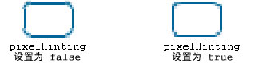

| 包 | flash.display |
| 类 | public final class GraphicsStroke |
| 继承 | GraphicsStroke |
| 实现 | IGraphicsStroke, IGraphicsData |
| 语言版本: | ActionScript 3.0 |
| 运行时版本: | Flash Player 10, AIR 1.5 |
将 GraphicsStroke 对象与 Graphics.drawGraphicsData() 方法一起使用。绘制 GraphicsStroke 对象与调用设置线条样式的 Graphics 类的方法之一（例如 Graphics.lineStyle() 方法、Graphics.lineBitmapStyle() 方法或 Graphics.lineGradientStyle() 方法）是等效的。
相关 API 元素
flash.display.Graphics.lineBitmapStyle()
flash.display.Graphics.lineGradientStyle()
flash.display.Graphics.drawGraphicsData()
 隐藏继承的公共属性
隐藏继承的公共属性 显示继承的公共属性
显示继承的公共属性| 属性 | 由以下参数定义 | ||
|---|---|---|---|
| caps : String
指定线条结尾处的端点的类型。 | GraphicsStroke | ||
 | constructor : Object
对类对象或给定对象实例的构造函数的引用。 | Object | |
| fill : IGraphicsFill
指定包含用于填充笔触的数据的实例。 | GraphicsStroke | ||
| joints : String
指定拐角处使用的连接外观的类型。 | GraphicsStroke | ||
| miterLimit : Number
表示将在哪个限制位置切断尖角。 | GraphicsStroke | ||
| pixelHinting : Boolean
指定是否提示笔触采用完整像素。 | GraphicsStroke | ||
| scaleMode : String
指定笔触粗细缩放。 | GraphicsStroke | ||
| thickness : Number
表示以点为单位的线条粗细；有效值为 0 到 255。 | GraphicsStroke | ||
| 方法 | 由以下参数定义 | ||
|---|---|---|---|
GraphicsStroke(thickness:Number = NaN, pixelHinting:Boolean = false, scaleMode:String = "normal", caps:String = "none", joints:String = "round", miterLimit:Number = 3.0, fill:IGraphicsFill = null)
创建新的 GraphicsStroke 对象。 | GraphicsStroke | ||
|
表示对象是否已经定义了指定的属性。 | Object | |
|
表示 Object 类的实例是否在指定为参数的对象的原型链中。 | Object | |
|
表示指定的属性是否存在、是否可枚举。 | Object | |
|
设置循环操作动态属性的可用性。 | Object | |
|
返回此对象的字符串表示形式，其格式设置遵守区域设置特定的约定。 | Object | |
|
返回指定对象的字符串表示形式。 | Object | |
|
返回指定对象的原始值。 | Object | |
caps | 属性 |
caps:String| 语言版本: | ActionScript 3.0 |
| 运行时版本: | Flash Player 10, AIR 1.5 |
指定线条结尾处的端点的类型。有效值为：CapsStyle.NONE、CapsStyle.ROUND 和 CapsStyle.SQUARE。如果未表示值，则 Flash 使用圆头端点。
例如，以下图示显示了不同的 capsStyle 设置。对于每种设置，插图显示了一条粗细为 30 的蓝色线条（应用 capsStyle 的线条），以及重叠于其上的粗细为 1 的黑色线条（未应用 capsStyle 的线条）：

实现
public function get caps():String public function set caps(value:String):void相关 API 元素
fill | 属性 |
public var fill:IGraphicsFill| 语言版本: | ActionScript 3.0 |
| 运行时版本: | Flash Player 10, AIR 1.5 |
指定包含用于填充笔触的数据的实例。IGraphicsFill 实例可表示一系列填充命令。
相关 API 元素
joints | 属性 |
joints:String| 语言版本: | ActionScript 3.0 |
| 运行时版本: | Flash Player 10, AIR 1.5 |
指定拐角处使用的连接外观的类型。有效值为：JointStyle.BEVEL、JointStyle.MITER 和 JointStyle.ROUND。如果未表示值，则 Flash 使用圆角连接。
例如，以下图示显示了不同的 joints 设置。对于每种设置，插图显示了一条粗细为 30 的带拐角的蓝色线条（应用 jointStyle 的线条），以及重叠于其上的粗细为 1 的带拐角的黑色线条（未应用 jointStyle 的线条）：
注意：对于设置为 JointStyle.MITER 的 joints，您可以使用 miterLimit 参数限制尖角的长度。
实现
public function get joints():String public function set joints(value:String):void相关 API 元素
miterLimit | 属性 |
public var miterLimit:Number| 语言版本: | ActionScript 3.0 |
| 运行时版本: | Flash Player 10, AIR 1.5 |
表示将在哪个限制位置切断尖角。有效值的范围是 1 到 255（超出该范围的值将舍入为 1 或 255）。此值只可用于 jointStyle 设置为 "miter" 的情况下。miterLimit 值表示向外延伸的尖角可以超出角边相交所形成的结合点的长度。此值表示为线条 thickness 的因子。例如，miterLimit 因子为 2.5 且 thickness 为 10 像素时，尖角将在 25 像素处切断。
例如，请考虑下列带拐角的线条，每个线条都以 thickness 20 进行绘制，但它们的 miterLimit 分别设置为 1、2 和 4。重叠在其上的黑色参考线条显示了结合处的联结点：

请注意，对于给定的 miterLimit 值，会有一个被切断的尖角的特定最大角度。下表列出了部分示例：
miterLimit 值： | 小于此角度将被切断： |
|---|---|
| 1.414 | 90 度 |
| 2 | 60 度 |
| 4 | 30 度 |
| 8 | 15 度 |
pixelHinting | 属性 |
public var pixelHinting:Boolean| 语言版本: | ActionScript 3.0 |
| 运行时版本: | Flash Player 10, AIR 1.5 |
指定是否提示笔触采用完整像素。它同时影响曲线锚点的位置以及线条笔触大小本身。在 pixelHinting 设置为 true 的情况下，Flash Player 将提示线条宽度采用完整像素宽度。在 pixelHinting 设置为 false 的情况下，对于曲线和直线可能会出现脱节。例如，下图显示了 Flash Player 如何呈现两个相同的圆角矩形，不同之处是用于 lineStyle() 方法的 pixelHinting 参数设置不同（将图像放大 200% 以强调差异）：

scaleMode | 属性 |
scaleMode:String| 语言版本: | ActionScript 3.0 |
| 运行时版本: | Flash Player 10, AIR 1.5 |
指定笔触粗细缩放。有效值为：
-
LineScaleMode.NORMAL-- 在缩放对象时总是缩放线条的粗细（默认值）。 -
LineScaleMode.NONE-- 从不缩放线条粗细。 -
LineScaleMode.VERTICAL-- 如果仅 垂直缩放对象，则不缩放线条粗细。例如，考虑下面的圆形，它们是用一个像素的线条绘制的，每个圆的scaleMode参数都被设置为LineScaleMode.VERTICAL。左边的圆仅在垂直方向上缩放，而右边的圆则同时在垂直和水平方向上缩放：
-
LineScaleMode.HORIZONTAL-- 如果仅 水平缩放对象，则不缩放线条粗细。例如，考虑下面的圆形，它们是用一个像素的线条绘制的，每个圆的scaleMode参数都被设置为LineScaleMode.HORIZONTAL。左边的圆仅在水平方向上缩放，而右边的圆则同时在垂直和水平方向上缩放：
实现
public function get scaleMode():String public function set scaleMode(value:String):void相关 API 元素
thickness | 属性 |
public var thickness:Number| 语言版本: | ActionScript 3.0 |
| 运行时版本: | Flash Player 10, AIR 1.5 |
表示以点为单位的线条粗细；有效值为 0 到 255。如果未指定数字，或者未定义该参数，则不绘制线条。如果传递的值小于 0，则默认值为 0。值 0 表示极细的粗细；最大粗细为 255。如果传递的值大于 255，则默认值为 255。
GraphicsStroke | () | 构造函数 |
public function GraphicsStroke(thickness:Number = NaN, pixelHinting:Boolean = false, scaleMode:String = "normal", caps:String = "none", joints:String = "round", miterLimit:Number = 3.0, fill:IGraphicsFill = null)| 语言版本: | ActionScript 3.0 |
| 运行时版本: | Flash Player 10, AIR 1.5 |
创建新的 GraphicsStroke 对象。
参数thickness:Number (default = NaN) | |||||||||||
pixelHinting:Boolean (default = false)pixelHinting 设置为 true 的情况下，Flash Player 将提示线条宽度采用完整像素宽度。在 pixelHinting 设置为 false 的情况下，对于曲线和直线可能会出现脱节。例如，下图显示了 Flash Player 如何呈现两个相同的圆角矩形，不同之处是用于 lineStyle() 方法的 pixelHinting 参数设置不同（将图像放大 200% 以强调差异）：
如果未提供值，则线条不使用像素提示。 | |||||||||||
scaleMode:String (default = "normal")
| |||||||||||
caps:String (default = "none")CapsStyle.NONE、CapsStyle.ROUND 和 CapsStyle.SQUARE。如果未表示值，则 Flash 使用圆头端点。
例如，以下图示显示了不同的
| |||||||||||
joints:String (default = "round")JointStyle.BEVEL、JointStyle.MITER 和 JointStyle.ROUND。如果未表示值，则 Flash 使用圆角连接。
例如，以下图示显示了不同的 注意：对于设置为 | |||||||||||
miterLimit:Number (default = 3.0)jointStyle 设置为 "miter" 的情况下。miterLimit 值表示向外延伸的尖角可以超出角边相交所形成的结合点的长度。此值表示为线条 thickness 的因子。例如，miterLimit 因子为 2.5 且 thickness 为 10 像素时，尖角将在 25 像素处切断。
例如，请考虑下列带拐角的线条，每个线条都以
请注意，对于给定的
| |||||||||||
fill:IGraphicsFill (default = null) |
相关 API 元素
Tue Jun 12 2018, 11:04 AM Z